建立測試用的網頁伺服器（支援MySQL）
網頁伺服器
在我們上傳網站到免費空間之前（例如000webhost），我們會需要做一些測試，因為如果每修改一次就重新上傳一次很沒有效率。本文介紹一個很簡單、很小、免安裝的網頁伺服器架設軟體，Uniform Server。
- 到官網http://www.uniformserver.com/下載。
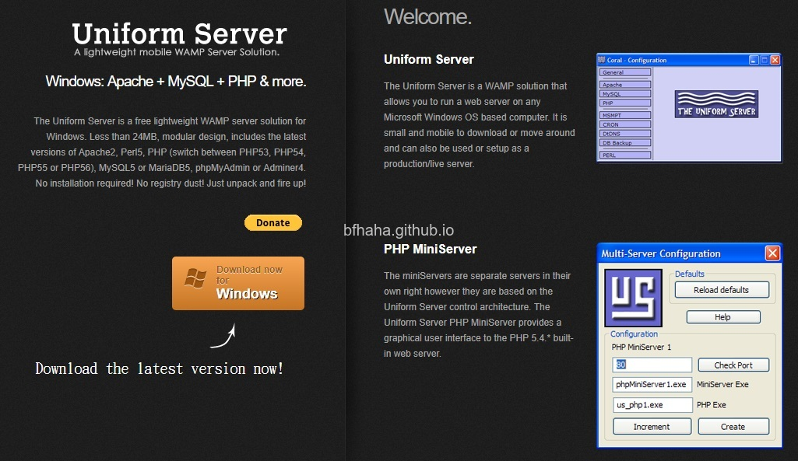
- 下載之後解壓縮，得到一個資料夾UniServerZ。
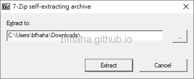
- 執行這個資料夾中的UniController.exe即可開啟。
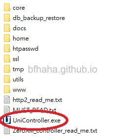
- 第一次執行時會要你設定從取根目錄的密碼，還要開啟防火牆。
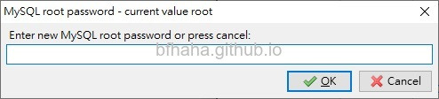
- 介面真的很簡單。
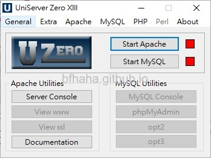
- 啟動伺服器之前，我們先回到UniServerZ資料夾中，進入其中的一個www資料夾。
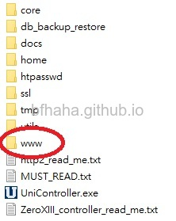
- 用記事本開啟其中的.htaccess檔案。
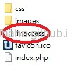
- 把Deny from all改成Allow from IP，IP就輸入你要連到這個網頁的電腦IP。請勿使用Allow from all，你的電腦非常有可能會被入侵，或是被勒索，就是會把你的檔案全部加密無法打開，你必須要付費給他才幫你解。
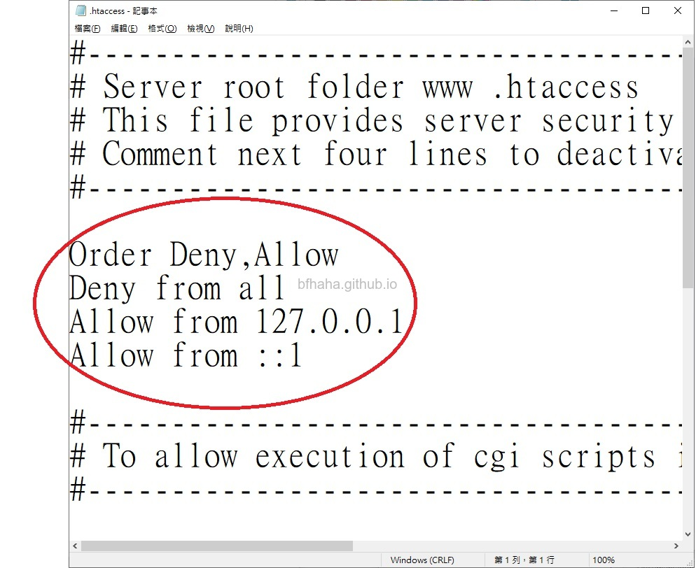
- 接著回到程式點選[Start Apache]即可開啟伺服器。
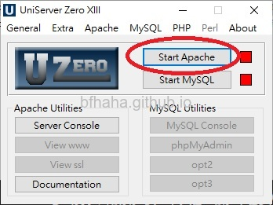
- 如果無法啟動，顯示"應用程式無法正確啟動 (0xc000007b)"，可以參考這篇文章來解決。
- 可以看到綠燈亮了表示伺服器正在運行中。
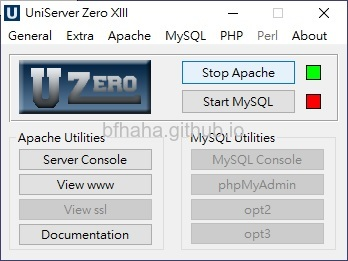
- 外部要連線進來的話就在瀏覽器輸入http://伺服器的IP即可連線，注意到http後面並沒有s。（要知道伺服器IP的話可以到[命令提示字元]輸入ipconfig查詢。）
- 我們現在說明如何建立一個有SSL的連線。注意，要先停止伺服器的運行才能設定，也就是要先按[Stop Apache]停止伺服器運行。
- 在程式首頁的功能表依序選擇[Apache]，[Apache SSL]，[Server Certificate and Key generator]
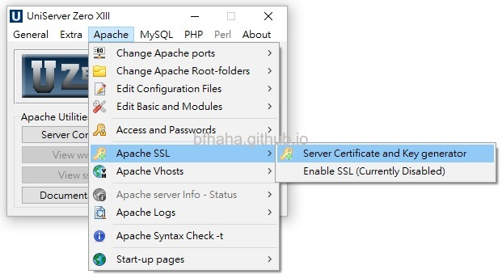
- 選項都照預設的就好，按下[Generate]
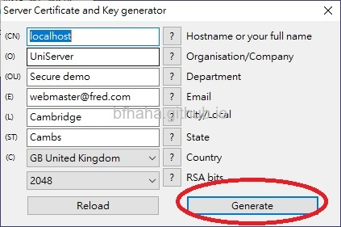
- 回到UniServerZ資料夾，這次要改成進入ssl資料夾中，跟剛剛一樣地，用記事本開啟.htaccess檔案，把Deny from all改成Allow from IP，IP就輸入你要連到這個網頁的電腦IP。請勿使用Allow from all，你的電腦非常有可能會被入侵，或是被勒索，就是會把你的檔案全部加密無法打開，你必須要付費給他才幫你解。
- 這時候從外部連線進來的時候，在瀏覽器輸入https://伺服器的IP，就是有SSL的連線。
- 所以簡單來說，
http://伺服器的IP是連到UniServerZ/www/index.php
https://伺服器的IP是連到UniServerZ/ssl/index.php
資料庫
接下來我們設定資料庫
- 關於PHP及MySQL的教學可以參考w3school，這些課程很基本也很簡單。
- 一樣在Uniform Server的主畫面按下[Start MySQL]，綠燈亮起表示開啟資料庫成功。

- 按下[phpMyAdmin]會開啟網頁進到資料庫管理的頁面。
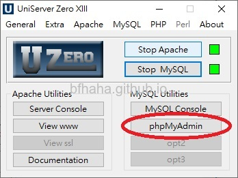
- 在這個資料庫管理的頁面，選擇[Databases]。
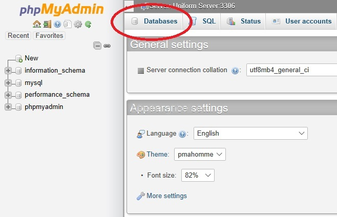
- 我們建立一個簡單的資料庫。輸入資料庫的名稱，例如mydb然後按下Create。
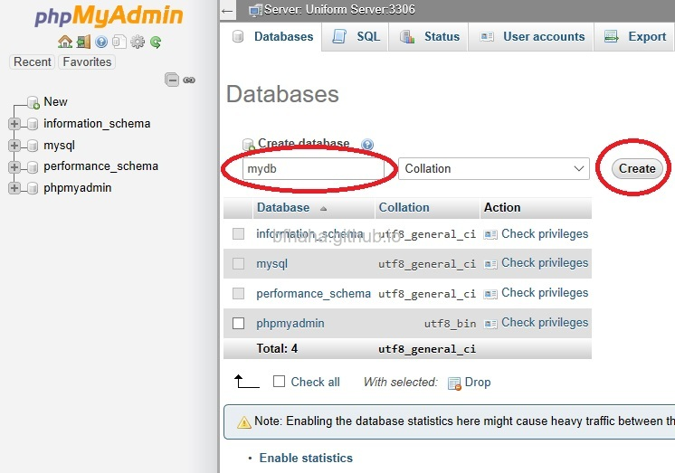
- 接著建立一個簡單的工作表。輸入工作表的名稱，例如mytable，我們只要3個column，分別記錄Name, ID, Phone，然後按下Go。
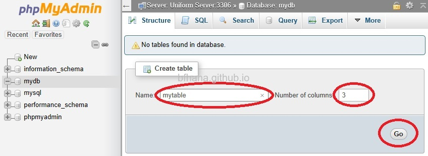
- 在Name的部分輸入各column的名稱：Name, ID, Phone，Type都選text。
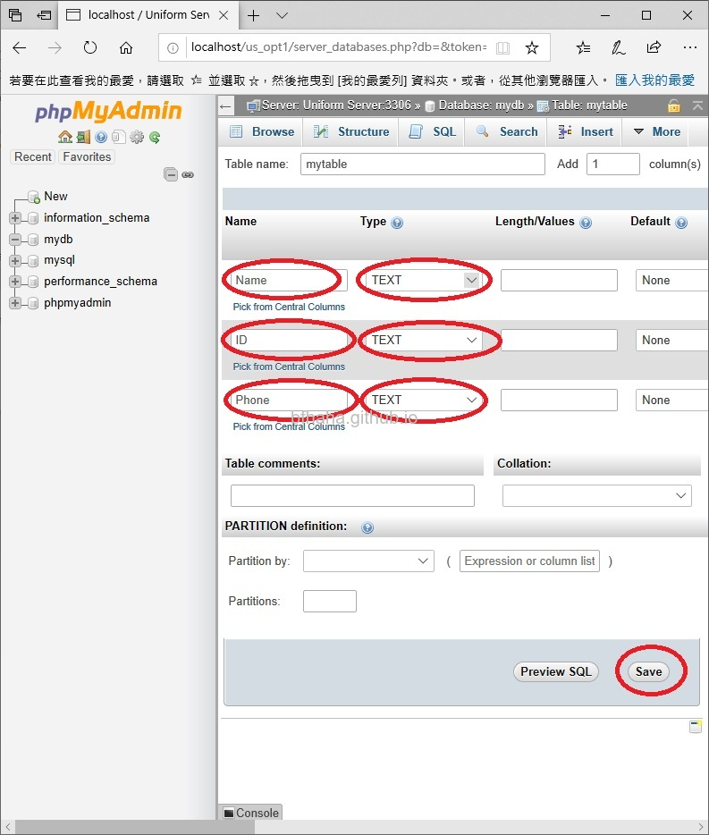
- 切換到[Structure]頁面，可以看到剛剛建立的三個column。在這裡也可以新增或移除column。
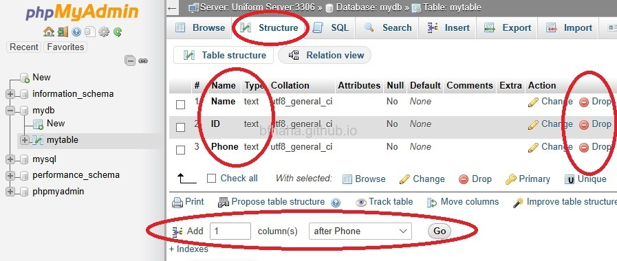
- 切換到[Browse]頁面，目前尚未有資料。
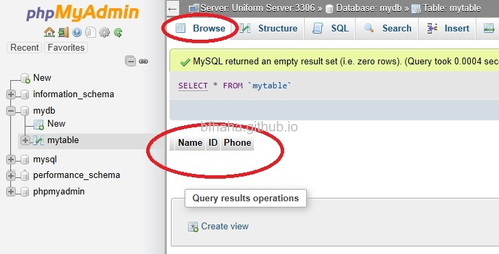
- 回到UniServerZ\www資料夾中，把原本的index.php備份起來（例如改個檔名），然後自己新增一個index.php，內容如下（用記事本編輯另存成index.php檔即可，記得存檔類型要選擇所有檔案。）
<html>
<body>
<form action="" method="POST">
Name: <input type="text" name="name"> <br>
ID: <input type="text" name="id"> <br>
Phone: <input type="text" name="phone"> <br>
<input type="submit" value="submit">
</form>
<?php
$link = mysqli_connect('127.0.0.1', 'root', '剛剛設定的密碼');
if ( $_SERVER['REQUEST_METHOD'] === 'POST' )
{
$Name = $_POST["name"];
$ID = $_POST["id"];
$Phone = $_POST["phone"];
$sql = "INSERT INTO mytable".
"(Name,ID,Phone)".
"VALUES".
"('$Name','$ID','$Phone')";
mysqli_select_db( $link, 'mydb' );
mysqli_query( $link, $sql );
}
?>
</body>
</html>
- 應該蠻好理解的，
- 第一個部分form就是建立一個填入個人資料的表單。
- 第二個部分部分就是跟資料庫連線，127.0.0.1是本地IP，就是自己連線到自己，root是資料庫預設的帳號。
- if($_SERVER...這段是避免重新整理頁面時重新送出表格。
- $Name = $_POST["name"];是取得表格中輸入的資料。
- $sql = "INSERT INTO ...這裡是把輸入的資料存入資料庫。
- 如果無法順利執行，建議逐行執行看看，並在中間加入echo "blabla"，來確認是否順利執行至此。這個網頁的教學也不錯，範例都有加入判斷是否能夠順利執行的回報。
- 或是到UniServerZ\core\apache2\logs裡面有個error檔，用記事本打開後可以看到錯誤訊息的記錄，例如我之前學的是用mysql_connect（沒有i），但這個指令在新版本的php已經不支援了，參考這裡，所以我執行mysql_connect(blabla)之後發現無法連上，在這個error檔案中就可以看到Fatal error: Call to undefined function mysql_connect()這個錯誤訊息。
- 現在在客戶端的網頁瀏覽器輸入http://IP/index.php，IP就是伺服器的IP，可以在[命令提示字元]中輸入ipconfig查詢到，可以看到剛剛建立的表格，輸入個人資料後按下submit。
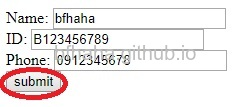
- 回到資料庫的管理系統，可以看到已經收到剛剛由表格送出的個人資料，並建立成一筆新的資料了。
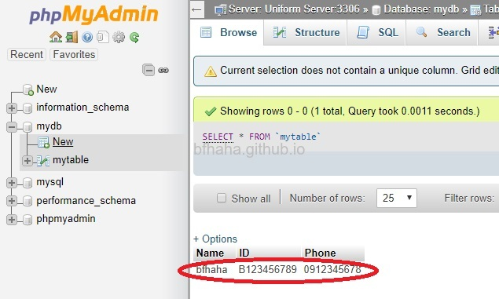